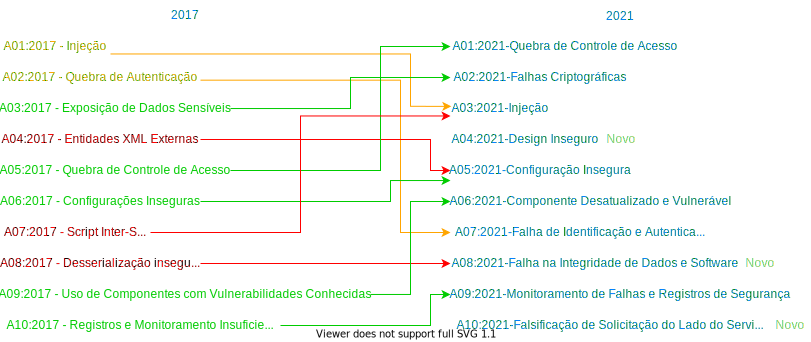

- en - English
- ar - العربية
- es - Español
- fr - Français
- id - Indonesian
- it - Italiano
- ja - 日本語
- zh_CN - 简体中文
- zh_TW - 繁體中文
Introdução
Bem-vindo ao OWASP Top 10 - 2021

Bem-vindo à última edição do OWASP Top 10! O OWASP Top 10 2021 é totalmente novo, com um novo design gráfico e um infográfico disponível que você pode imprimir ou obter em nossa página inicial.
Um grande obrigado a todos que contribuíram com seu tempo e dados para esta iteração. Sem você, esta parcela não aconteceria. OBRIGADO.
O que mudou no Top 10 para 2021
Existem três novas categorias, quatro categorias com alterações em nomenclaturas e escopo, e alguma consolidação no Top 10 para 2021.

- A01:2021-Quebra de Controle de Acesso sobe da quinta posição; 94% das aplicação foram testados para alguma forma de controle de acesso quebrado. O 34 CWEs mapeados para Quebra de Controle de Acesso tiveram mais ocorrências em aplicações do que qualquer outra categoria.
- A02:2021-Falhas Criptográficas sobe uma posição para #2, anteriormente conhecido como Exposição de Dados Sensíveis, que era um sintoma amplo em vez de uma causa raiz. O foco renovado aqui está nas falhas relacionadas à criptografia, que muitas vezes leva à exposição de dados confidenciais ou sistema comprometido.
- A03:2021-Injeção foi rebaixado para terceira posição. 94% das aplicações foram testadas para alguma forma de injeção com uma taxa de incidência máxima de 19%, uma taxa de incidência média de 3,37% e os 33 CWEs mapeados nesta categoria têm o segundo maior número de ocorrências em aplicações, com 274k ocorrências. Cross-site Scripting (Scripts Inter-site) agora faz parte desta categoria nesta edição.
- A04:2021-Design Inseguro é uma nova categoria para 2021, com foco em riscos relacionados a falhas de projeto. Se quisermos genuinamente "mover para a esquerda (shift left)" como setor, precisamos de mais modelagem de ameaças, padrões e princípios de design seguros e arquiteturas de referência. Um design inseguro não pode ser corrigido por uma implementação perfeita, pois, por definição, os controles de segurança necessários nunca foram criados para a defesa contra ataques específicos.
- A05:2021-Configuração Insegura subiu para sexta posição em comparação a edição anterior. 90% dos aplicativos foram testados para alguma conforma de configuração insegura, com uma taxa de incidência média de 4,5% e mais de 208 mil ocorrências de CWEs mapeados para esta categoria de risco. Com mais mudanças em software altamente configurável, não é surpreendente ver essa categoria subir.
- A06:2021-Componente Desatualizado e Vulnerável foi anteriormente intitulado "Usar componente com vulnerabilidade conhecida" e é o número 2 na pesquisa da comunidade Top 10, mas também tinha dados suficientes para chegar ao Top 10 por meio de análise de dados. Esta categoria subiu da 9ª posição em 2017 e é um problema conhecido que temos dificuldade em testar e avaliar o risco. É a única categoria a não ter nenhuma Vulnerabilidade e Exposições Comuns (CVEs) mapeada para os CWEs incluídos, portanto, uma exploração padrão e pesos de impacto de 5,0 são considerados em suas pontuações.
- A07:2021-Falha de Identificação e Autenticação era conhecida anteriormente como Falha de Autenticação e caiu da terceira posição para essa, e foram incluídas as CWEs que mais se relacionam com as falhas na identificação. Essa categoria ainda é parte integrante do Top 10, mas a maior disponibilidade de estruturas (frameworks) padronizadas parece estar ajudando a reduzir.
- A08:2021-Falha na Integridade de Dados e Software é uma nova categoria em 2021, focadas em fazer premissas relacionadas a atualização de software, dados críticos, e linhas de CI/CD que não verificam a integridade. Um dos maiores pesos dos dados nessa categoria são CVE/CVSS mapeados para os 10 CWEs nesta categoria. A categoria A8:2017-Desserialização Insegura agora faz parte dessa categoria.
- A09:2021-Monitoramento de Falhas e Registros de Segurança anteriormente chamado de A10:2017-Registro e Monitoramentos Insuficientes e foi adicionado pela pesquisa da comunidade de Top 10, ficando em terceiro lugar, passando da 10° posição anterior. Essa categoria foi expandida para incluir um maior número de falhas, sendo um desafio para testar e não está bem representada nos dados de CVE/CVSS. No entanto falhas nessa categoria podem impactar diretamente a visibilidade, o alerta de incidente e a perícia.
- A10:2021-Falsificação de Solicitação do Lado do Servidor foi adicionada a partir da pesquisa da comunidade, sendo a primeira da classificação. Os dados mostram uma taxa de incidência relativamente baixa com cobertura de teste acima da média, junto com classificações acima da média para potencial de exploração e impacto. Esta categoria representa o cenário em que os membros da comunidade de segurança estão nos dizendo que isso é importante, embora não esteja ilustrado nos dados neste momento.
Metodologia
Esta edição do Top 10 é mais baseada em dados do que nunca, mas não cegamente baseada em dados. Selecionamos oito das dez categorias de dados fornecidos e duas categorias da pesquisa da comunidade Top 10 em um alto nível. Fazemos isso por uma razão fundamental: olhar para os dados de contribuição é olhar para o passado. Os pesquisadores do segurança de aplicação levam tempo para encontrar novas vulnerabilidades e novas maneiras de testá-las. Leva tempo para integrar esses testes em ferramentas e processos. No momento em que podemos testar com segurança uma fraqueza em escala, provavelmente já se passaram anos. Para equilibrar essa visão, usamos uma pesquisa da comunidade para perguntar a especialistas em segurança e desenvolvimento de aplicativos na linha de frente o que eles veem como fraquezas essenciais que os dados podem não mostrar ainda.
Existem algumas mudanças críticas que adotamos para continuar a amadurecer o Top 10.
Como as categorias são estruturadas
Os esforços anteriores de coleta de dados concentraram-se em um subconjunto prescrito de aproximadamente 30 CWEs com um campo solicitando descobertas adicionais. Aprendemos que as organizações se concentrariam principalmente nesses 30 CWEs e raramente acrescentariam outros CWEs que vissem. Nesta iteração, nós abrimos e apenas pedimos os dados, sem restrição de CWEs. Pedimos o número de aplicativos testados para um determinado ano (começando em 2017) e o número de aplicativos com pelo menos uma instância de um CWE encontrado em teste. Esse formato nos permite rastrear a prevalência de cada CWE na população de aplicativos. Ignoramos a frequência para nossos propósitos; embora possa ser necessário para outras situações, ele apenas oculta a prevalência real na população de aplicação. Se um aplicativo tem quatro instâncias de um CWE ou 4.000 instâncias não faz parte do cálculo para os 10 principais. Passamos de aproximadamente 30 CWEs para quase 400 CWEs para analisar no conjunto de dados. Planejamos fazer análises de dados adicionais como um suplemento no futuro. Este aumento significativo no número de CWEs exige mudanças na forma como as categorias são estruturadas.
Passamos vários meses agrupando e categorizando os CWEs e poderíamos ter continuado por mais tempo. Tivemos que parar em algum ponto. Existem os tipos de causa raiz e sintoma dos CWEs, em que os tipos de causa raiz são como "Falha criptográfica" e "Configuração incorreta" em contraste com os tipos sintoma como "Exposição de dados confidenciais" e "Negação de serviço". Decidimos nos concentrar na causa raiz sempre que possível, pois é mais lógico para fornecer orientação de identificação e correção. Focar na causa raiz em vez do sintoma não é um conceito novo; o Top 10 foi uma mistura de sintoma e causa raiz. Os CWEs também são uma mistura de sintoma e causa raiz; estamos simplesmente sendo mais deliberados sobre isso e convocando-o. Há uma média de 19,6 CWEs por categoria nesta parcela, com os limites inferiores e superiores em 1 CWE para A10: 2021-Server-Side Request Forgery (SSRF) a 40 CWEs em A04: 2021-Design inseguro. Essa estrutura de categorias atualizada oferece benefícios adicionais de treinamento, pois as empresas podem se concentrar em CWEs que façam sentido para uma linguagem/estrutura.
Como os dados são usados para selecionar categorias
Em 2017, selecionamos categorias por taxa de incidência para determinar a probabilidade e, em seguida, as classificamos em discussões de equipe com base em décadas de experiência em Explorabilidade, Detectabilidade (também probabilidade) e Impacto técnico. Para 2021, queremos usar os dados para Explorabilidade e Impacto (técnico), se possível.
Baixamos o OWASP Dependency Check e extraímos a pontuação de exploração do CVSS e as pontuações de impacto agrupadas por CWEs relacionados. Foi necessário um pouco de pesquisa e esforço, pois todos os CVEs têm pontuações CVSSv2, mas há falhas no CVSSv2 que o CVSSv3 deve corrigir. Após um determinado momento, todos os CVEs também recebem uma pontuação CVSSv3. Além disso, os intervalos de pontuação e fórmulas foram atualizados entre CVSSv2 e CVSSv3.
Em CVSSv2, Exploração e Impacto (Técnico) podem ser até 10,0, mas a fórmula os derrubaria para 60% para Exploração e 40% para Impacto. No CVSSv3, o máximo teórico foi limitado a 6,0 para Exploração e 4,0 para Impacto. Com a ponderação considerada, a pontuação de impacto aumentou, quase um ponto e meio em média no CVSSv3, e a explorabilidade caiu quase meio ponto abaixo em média.
Existem 125k registros de um CVE mapeado para um CWE nos dados do National Vulnerability Database (NVD) extraídos do OWASP Dependency Check, e há 241 CWEs exclusivos mapeados para um CVE. 62k dos CWEs têm uma pontuação CVSSv3, que é aproximadamente metade da população do conjunto de dados.
Para os dez primeiros 2021, calculamos as pontuações médias de exploração e impacto da seguinte maneira. Agrupamos todos os CVEs com pontuações CVSS por CWE e ponderamos exploração e impacto marcados pela porcentagem da população que tinha CVSSv3 + a população restante de pontuações CVSSv2 para obter uma média geral. Mapeamos essas médias para os CWEs no conjunto de dados para usar como pontuação Exploração e Impacto (Técnico) para a outra metade da equação de risco.
Por que não apenas dados puramente estatísticos?
Os resultados nos dados são limitados principalmente ao que podemos testar de maneira automatizada. Fale com um profissional experiente da segurança de aplicações, e ele lhe contará sobre as coisas que encontrou e as tendências que viu e que ainda não constaram dos dados. Leva tempo para as pessoas desenvolverem metodologias de teste para certos tipos de vulnerabilidade e mais tempo para que esses testes sejam automatizados e executados em uma grande quantidade de aplicativos. Tudo o que encontramos é uma retrospectiva e pode estar faltando tendências do ano passado, que não estão presentes nos dados.
Portanto, escolhemos apenas oito das dez categorias dos dados porque estão incompletos. As outras duas categorias são da pesquisa da comunidade Top 10. Ele permite que os profissionais nas linhas de frente votem naquilo que consideram os maiores riscos que podem não estar nos dados (e podem nunca ser expressos nos dados).
Por que taxa de incidência em vez de frequência?
Existem três fontes principais de dados. Nós os identificamos como Ferramentas Assistidas por Humanos (HaT), Humanos Assistidos por Ferramentas (TaH) e Ferramentas.
Ferramentas e HaT são geradores de alta-frequência. As ferramentas procurarão vulnerabilidades específicas e tentarão incansavelmente encontrar todas as instâncias dessa vulnerabilidade, gerando contagens de descobertas altas para alguns tipos de vulnerabilidade. Observe o Cross-Site Scripting, que normalmente é um de dois tipos: é um erro menor e isolado ou um problema sistêmico. Quando é um problema sistêmico, a contagem de descobertas pode chegar à casa dos milhares para um único aplicativo. Essa alta frequência abafa a maioria das outras vulnerabilidades encontradas em relatórios ou dados.
TaH, por outro lado, encontrará uma gama mais ampla de tipos de vulnerabilidade, mas em uma frequência muito menor devido a restrições de tempo. Quando os humanos testam um aplicativo e veem algo como Cross-Site Scripting, eles normalmente encontram três ou quatro instâncias e param. Eles podem determinar um achado sistêmico e escrevê-lo com uma recomendação para corrigir em uma escala de aplicativo. Não há necessidade (ou tempo) para encontrar todas as instâncias.
Suponha que pegemos esses dois conjuntos de dados distintos e tentemos mesclá-los na frequência. Nesse caso, os dados de Ferramentas e HaT irão afogar os dados TaH mais precisos (mas amplos) e é uma boa parte do motivo pelo qual algo como Cross-Site Scripting foi tão bem classificado em muitas listas quando o impacto é geralmente de baixo a moderado. É por causa do grande volume de descobertas. (Cross-Site Scripting também é razoavelmente fácil de testar, portanto, há muitos outros testes para ele também).
Em 2017, introduzimos o uso da taxa de incidência para dar uma nova olhada nos dados e mesclar os dados de Ferramentas e HaT com os dados TaH. A taxa de incidência pergunta qual porcentagem da população do aplicativo tinha pelo menos uma instância de um tipo de vulnerabilidade. Não nos importamos se foi pontual ou sistêmico. Isso é irrelevante para nossos propósitos; só precisamos saber quantos aplicativos tiveram pelo menos uma instância, o que ajuda a fornecer uma visão mais clara dos resultados de teste em vários tipos de teste, sem afogar os dados em resultados de alta frequência. Isso corresponde a uma visão relacionada ao risco, pois um invasor precisa de apenas uma instância para atacar um aplicativo com êxito por meio da categoria.
Qual é o processo de coleta e análise de dados?
Formalizamos o processo de coleta de dados OWASP Top 10 no Open Security Summit em 2017. No OWASP Top 10 líderes e a comunidade passaram dois dias trabalhando na formalização de um processo transparente de coleta de dados. A edição de 2021 é a segunda vez que usamos essa metodologia.
Publicamos uma chamada de dados através dos canais de mídia social disponíveis para nós. Na página do Projeto OWASP, listamos os elementos de dados e a estrutura que estamos procurando e como enviá-los. No projeto GitHub, temos arquivos de exemplo que servem como modelos. Trabalhamos com as organizações conforme necessário para ajudar a descobrir a estrutura e o mapeamento para os CWEs.
Obtemos dados de organizações que estão no negócio de ferramentas de teste, programas de recompenças de erros (Bug Bounty) e organizações que contribuem com dados de teste internos. Assim que tivermos os dados, nós os carregamos juntos e executamos uma análise fundamental do que os CWEs mapeiam para as categorias de risco. Há sobreposição entre alguns CWEs e outros estão intimamente relacionados (por exemplo, vulnerabilidades criptográficas). Quaisquer decisões relacionadas aos dados brutos enviados são documentadas e publicadas para serem abertas e transparentes com a forma como normalizamos os dados.
Examinamos as oito categorias com as taxas de incidência mais altas para inclusão no Top 10. Também olhamos os resultados da pesquisa da comunidade Top 10 para ver quais já podem estar presentes nos dados. Os dois primeiros votos que ainda não estão presentes nos dados serão selecionados para os outros dois lugares no Top 10. Uma vez que todos os dez foram selecionados, aplicamos fatores generalizados para explorabilidade e impacto; para ajudar a classificar os Top 10 2021 em uma ordem baseada no risco.
Fatores dos Dados
Existem fatores nos dados listados para cada uma das 10 principais categorias, eis o que eles significam: - CWEs mapeados: o número de CWEs mapeados para uma categoria pela equipe dos 10 principais. - Taxa de incidência: a taxa de incidência é a porcentagem de aplicativos vulneráveis a esse CWE da população testada por essa organização naquele ano. - (Teste) Cobertura: a porcentagem de aplicativos testados por todas as organizações para um determinado CWE. - Peso de exploração: a sub-pontuação do Exploração das pontuações CVSSv2 e CVSSv3 atribuídas aos CVEs mapeados para CWEs, normalizados e colocados em uma escala de 10 pontos. - Impacto ponderado: a sub-pontuação de impacto das pontuações CVSSv2 e CVSSv3 atribuídas aos CVEs mapeados para CWEs, normalizados e colocados em uma escala de 10 pontos. - Total de ocorrências: número total de aplicativos encontrados com os CWEs mapeados para uma categoria. - Total de CVEs: número total de CVEs no banco de dados NVD que foram mapeados para os CWEs mapeados para uma categoria.
Parabéns aos fornecedores de dados
As organizações a seguir (junto com alguns doadores anônimos) gentilmente doaram dados para mais de 500.000 aplicativos para tornar este o maior e mais abrangente conjunto de dados de segurança de aplicativos. Sem vocês, isso não seria possível.
- AppSec Labs
- Cobalt.io
- Contrast Security
- GitLab
- HackerOne
- HCL Technologies
- Micro Focus
- PenTest-Tools
- Probely
- Sqreen
- Veracode
- WhiteHat (NTT)
Obrigado aos nossos patrocinadores
A equipe OWASP Top 10 2021 agradece o apoio financeiro do Secure Code Warrior e Just Eat.